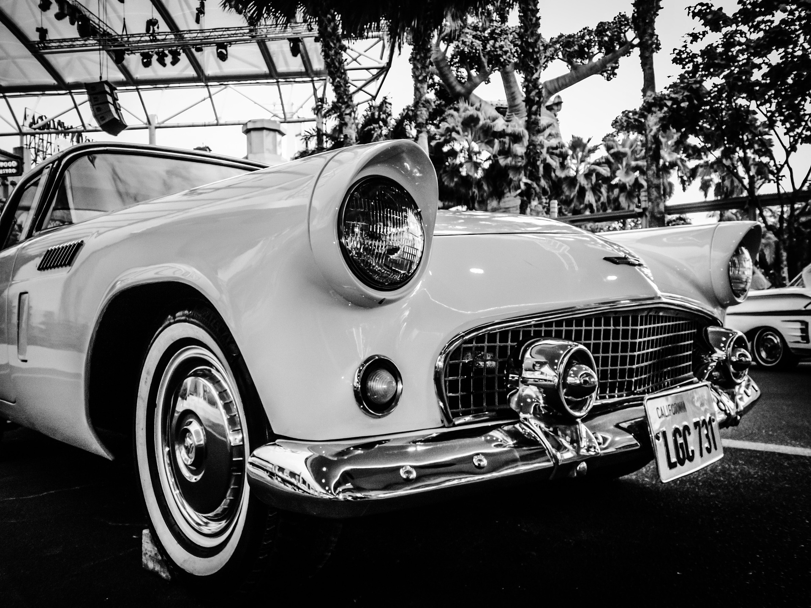

Profesjonalny warsztat samochodowy, prowadzony przez wykwalifikowane motocyklistki ! Jedyny taki w Polsce. Dzięki połączeniu pasji, wiedzy i kompetencji zajmiemy się nie tylko Twoim samochodem, ale także możemy wprowadzić Cię w świat dwóch kółek. LWG!
